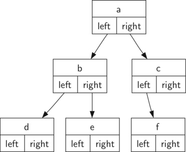
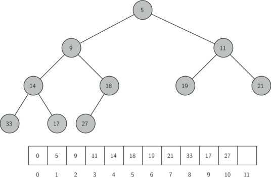

树可以具有以下方法：
BinaryTree() creates a new instance of a binary tree.get_left_child() returns the binary tree corresponding to the left child of the current nodeget_right_child() return the binary tree corresponding to the right child of the current nodeset_root_val(val) stores the object stored in the current nodeget_root_val() returns the object stored in the current nodeinsert_left(val) creates a new binary tree and installs it as the left child of the current nodeinsert_right(val) creates a new binary tree and installs it as the right child of the current node
嵌套列表表示树
在列表实现树时，我们将存储根节点作为列表的第一个元素的值。列表的第二个元素的本身是一个表示左子树的列表。这个列表的第三个元素表示在右子树的另一个列表。
# coding: utf-8
def BinaryTree(r):
"""
creates a new instance of a binary tree.
"""
return [r,[],[]]
def get_left_child(root):
"""
returns the binary tree corresponding to the left child of the current node
"""
return root[1]
def get_right_child(root):
"""
return the binary tree corresponding to the right child of the current node
"""
return root[2]
def set_root_val(root, val):
"""stores the object stored in the current node
"""
root[0] = val
def get_root_val(root):
"""
returns the object stored in the current node
"""
return root[0]
def insert_left(root, new_branch):
"""
creates a new binary tree and installs it as the left child of the current node
插入一个左子节点，首先获取对应于当前左子节点的列表（可能是空的）。
然后，添加新的左子节点，将原来的左子节点作为新节点的左子节点。
这使我们能够将新节点插入到树中的任何位置.
"""
if root[1]:
root[1] = [new_branch,root[1], []]
else:
root[1] = [new_branch, [], []]
return root
def insert_right(root, new_branch):
"""
creates a new binary tree and installs it as the right child of the current node
"""
if root[2]:
root[2] = [new_branch, [], root[2]]
else:
root[2] = [new_branch, [], []]
return root
if __name__ == "__main__":
r = BinaryTree(3)
insert_left(r,4)
insert_left(r,5)
insert_right(r,6)
insert_right(r,7)
l = get_left_child(r)
print(l)
set_root_val(l,9)
print(r)
insert_left(l,11)
print(r)
print(get_right_child(get_right_child(r)))
# result
#[5, [4, [], []], []]
#[3, [9, [4, [], []], []], [7, [], [6, [], []]]]
#[3, [9, [11, [4, [], []], []], []], [7, [], [6, [], []]]]
#[6, [], []]
节点和引用
节点和引用方法，定义一个类，具有根、以及左、右子树属性。这种表示更紧密地结合了面向对象的方式。树的结构类似于下图所示。

左右子树是其他二叉树实例的引用。例如，当插入一个新的左子节点到树上时，即创建了二叉树的另一个实例，并修改了根节点的self.left_child使之指向新的树。
import doctest
class BinaryTree(object):
"""
>>> r = BinaryTree('a')
>>> r.get_root_val()
'a'
>>> r.get_left_child()
>>> r.insert_left('b')
>>> r.get_left_child().get_root_val()
'b'
>>> r.insert_right('c')
>>> r.get_right_child().get_root_val()
'c'
>>> r.get_right_child().set_root_val('hello')
>>> r.get_right_child().get_root_val()
'hello'
"""
def __init__(self, root):
self.key = root
self.left_child = None
self.right_child = None
def insert_left(self, item):
"""
creates a new binary tree and installs it as the left child of the current node
"""
if self.left_child:
self.left_child = BinaryTree(item)
else:
t = self.left_child
self.left_child = BinaryTree(item)
self.left_child.left_child = t
def insert_right(self, item):
"""
creates a new binary tree and installs it as the right child of the current node
"""
if self.right_child:
self.right_child = BinaryTree(item)
else:
t = self.right_child
self.right_child = BinaryTree(item)
self.right_child.right_child = t
def get_right_child(self):
"""
return the binary tree corresponding to the right child of the current node
"""
return self.right_child
def get_left_child(self):
"""
return the binary tree corresponding to the left child of the current node
"""
return self.left_child
def set_root_val(self, root):
"""
stores the object stored in the current node
"""
self.key = root
def get_root_val(self):
"""
returns the object stored in the current node
"""
return self.key
def pre_order(self, root):
"""
preorder traversal
"""
print(root.key, end=' ')
if root.left_child:
root.pre_order(root.left_child)
if root.right_child:
root.pre_order(root.right_child)
def post_order(self, root):
"""
postorder traversal
"""
if root is not None:
self.post_order(root.left_child)
self.post_order(root.right_child)
print(root.key, end=' ')
def pre_order(self, root):
"""
Preorder traversal
"""
print(root.key, end=' ')
if root.left_child:
self.pre_order(root.left_child)
if root.right_child:
self.pre_order(root.right_child)
def in_order(self, root):
"""
postorder traversal
"""
if root is not None:
self.in_order(root.left_child)
print(root.key, end=' ')
self.in_order(root.right_child)
if __name__ == "__main__":
doctest.testmod(verbose=True)
优先队列和二叉堆
优先队列(Priority Queues)是一类抽象数据类型。优先队列中的每个元素都有各自的优先级，优先级最高的元素最先得到服务；优先级相同的元素按照其在优先队列中的顺序得到服务。在优先队列的内部，元素的次序是由“优先级”来决定：高优先级的元素排在队首，而低优先级的元素则排在后面。
实现优先队列的经典方法是采用二叉堆(Binary Heap)。因为使用二叉堆能将优先队列的入队和出队复杂度都保持在\(O(\log n)\)。 二叉堆有两种：键值总是最小的排在队首称为最小堆(min heap)，反之，键值总是最大的排在队首称为最大堆(max heap)。
储存元素要满足堆次序，即堆中任何一个节点\(x\)，其父节点\(p\)的键值均小于或等于\(x\)的键值。下图所示是具备堆次序性质的完全二叉树。
列表与完全二叉树
不需要使用节点，引用或嵌套列表，用单个列表就能代表完全二叉树。因为对于完全二叉树，如果节点在列表中的下标为\(p\)，那么其左子节点下标为\(2p\)，右节点为\(2p+1\)。当我们要找任何节点的父节点时，可以直接使用 python 的整除。如果节点在列表中下标为\(n\)，那么父节点下标为\(n//2\)（参考下图）。使用列表, 能够使用简单的数学方法高效地遍历一棵完全二叉树，这也导致了二叉堆的高效实现。

二叉堆的操作与实现
BinaryHeap()：创建一个新的、空的二叉堆对象insert(k)：把新元素加入到堆中findMin()：返回堆中的最小项，最小项仍保留在堆中delMin()：返回堆中的最小项，同时从堆中删除isEmpty()：返回堆是否为空size()：返回堆中元素的个数buildHeap(list)：从一个包含元素的列表创建新堆
有两个关键的操作：
1. insert方法。首先，为了满足“完全二叉树”的性质，新键值应该添加到列表的末尾。然而新键值简单地添加在列表末尾，显然无法满足堆次序。所以要通过比较父节点和新加入的元素的方法来重新满足堆次序。如果新加入的元素比父节点要小，可以与父节点互换位置；不断交换，直到到达树的顶端。下图所示一系列交换操作来使新加入元素“上浮”到正确的位置。

2.delMin方法 移走根节点的元素后如何保持堆结构和堆次序: 首先，用最后一个节点来代替根节点, 移走最后一个节点保持了堆结构的性质。这么简单的替换，还是会破坏堆次序。第二步，将新节点“下沉”来恢复堆次序。下图所示的是一系列交换操作来使新节点“下沉”到正确的位置。

class BinHeap(object):
"""
创建一个新的、空的二叉堆对象
"""
def __init__(self):
self.list = [0]
self.size = 0
def perc_up(self,i):
"""
Percolate the new node into proper position
"""
while i//2>0:
if self.list[i] < self.list[i//2]:
self.list[i], self.list[i//2] = self.list[i//2], self.list[i]
i = i//2
def insert(self, item):
"""把新元素加入到堆中"""
self.list.append(item)
self.size += 1
self.perc_up(self.size)
def findMin(self):
"""返回堆中的最小项，最小项仍保留在堆中"""
return self.list[1]
def delMin(self):
"""返回堆中的最小项，同时从堆中删除"""
retval = self.list[1]
self.list[1] = self.list[-1]
self.size -=1
self.list.pop()
self.perc_down(1)
return retval
def perc_down(self, i):
"""
Percolate the root node down the tree
"""
while (i * 2) <= self.currentSize:
mc = self.minChild(i)
if self.heapList[i] > self.heapList[mc]:
tmp = self.heapList[i]
self.heapList[i] = self.heapList[mc]
self.heapList[mc] = tmp
i = mc
def minChild(self, i):
"""
find the min child
"""
if i * 2 + 1 > self.currentSize:
return i * 2
else:
if self.heapList[i * 2] < self.heapList[i * 2 + 1]:
return i * 2
else:
return i * 2 + 1
def isEmpty(self):
"""返回堆是否为空"""
return self.size == 0
def __len__(self):
"""返回堆中元素的个数"""
return self.size
def buildHeap(self,alist):
"""从一个包含元素的列表创建新堆"""
self.size = len(alist)
self.list.extend(alist)
i = self.size//2
while i >0:
self.perc_down(i)
i -= 1
分析树
分析树(Parse Tree)是一个反映某种形式语言字符串的语法关系的有根有序树, 常常用于真实世界的结构表示，例如句子或数学表达式。
下图是\( ((7+3)*(5−2))\) 的分析树, 树的层级结构帮我们理解了整个表达式的运算顺序。在计算最顶上的乘法运算前，我们先要计算子树中的加法和减法运算。左子树的加法运算结果为\(10\)，右子树的减法运算结果为\(3\)。利用树的层级结构，一旦我们计算出了子节点中表达式的结果，我们能够将整个子树用一个节点来替换。

建立分析树的第一步是将表达式字符串分解成符号保存在列表里。有四种符号需要考虑：左括号，右括号，操作符和操作数。当读到一个左括号时，将开始一个新的表达式，因此需要创建一个子树来对应这个新的表达式。相反，每当读到一个右括号，就得结束这个表达式。另外，操作数将成为叶节点和他们所属的操作符的子节点。最后，每个操作符都应该有一个左子节点和一个右子节点。通过上面的分析我们定义以下四条规则：
- 如果当前读入的字符是
(，添加一个新的节点作为当前节点的左子节点，并下降到左子节点处。
- 如果当前读入的字符在列表[
+, -, /, *]中，将当前节点的根值设置为当前读入的字符。添加一个新的节点作为当前节点的右子节点，并下降到右子节点处。
- 如果当前读入的字符是一个数字，将当前节点的根值设置为该数字，并返回到它的父节点。
- 如果当前读入的字符是
)，返回当前节点的父节点。
利用get_left_child和get_right_child方法可以获得子节点的方法。利用栈跟踪父节点：当要下降到当前节点的子节点时，将当前节点压入栈；当要返回当前节点的父节点时，从栈中弹出该父节点。
所以使用栈和二叉树来创建分析树，代码如下：
from stack import Stack
from binary_tree2 import BinaryTree
import operator
def build_parse_tree(fp_exp):
fp_list = fp_exp.split()
p_stack = Stack()
e_tree = BinaryTree('')
p_stack.push(e_tree)
current_tree = e_tree
for i in fp_list:
if i == '(':
current_tree.insert_left('')
p_stack.push(current_tree)
current_tree = current_tree.get_left_child()
elif i not in ['+','-','*','/',')']:
current_tree.set_root_val(int(i))
parent = p_stack.pop()
current_tree = parent
elif i in ['+','-','*','/']:
current_tree.set_root_val(i)
current_tree.insert_right('')
p_stack.push(current_tree)
current_tree = current_tree.get_right_child()
elif i == ')':
current_tree = p_stack.pop()
else:
raise ValueError
return e_tree
def postorder_eval(tree):
opers = {'+':operator.add, '-':operator.sub, '*':operator.mul, '/': operator.truediv}
res1 = None
res2 = None
if tree:
res1 = postorder_eval(tree.get_left_child())
res2 = postorder_eval(tree.get_right_child())
if res1 and res2:
return opers[tree.get_root_val()](res1, res2)
else:
return tree.get_root_val()
pt = build_parse_tree("( ( 10 + 5 ) * 3 )")
print('result = %d' %postorder_eval(pt))
树的遍历
对树中所有节点的访问称为遍历(traversal)。按照节点的访问方式不同，树的遍历模式可分为 3 种。这三种方式常被用于访问树的节点，它们之间的不同在于访问每个节点的次序不同。这三种遍历分别叫做先序遍历(preorder)，中序遍历(inorder)和后序遍历(postorder)。具体定义为：
先序遍历 先访问根节点，然后递归使用先序遍历访问左子树，再递归使用先序遍历访问右子树。
中序遍历 递归使用中序遍历访问左子树，然后访问根节点，最后再递归使用中序遍历访问右子树。
后序遍历 先递归使用后序遍历访问左子树和右子树，最后访问根节点。
三种遍历模式的代码已经包括在BinaryTree类中（参见节点和引用一节）。